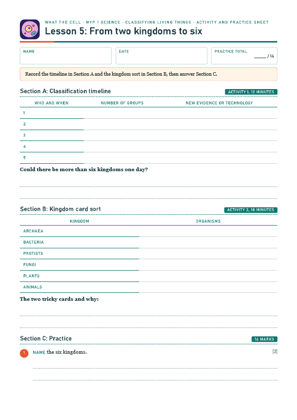

By the end of the lesson you can
- Describe how classification changed from Aristotle to today
- State the three features used to sort organisms into kingdoms
- Name the six kingdoms and an example of each
- Explain why new evidence led to new kingdoms
Keys: arrows or a presentation clicker move the slides, F for full screen. Slides with a red dot have a video or simulation.
Videos (all 5 minutes or less)
- 3:27
The 6 kingdoms of Classification in 3 minutes
MooMooMath and Science. While you watch: Which two kingdoms have simple cells? Slide 11.
Simulations
- Lab
Print and practise

Activity and practice sheet
Used in the lesson’s activities, with practice questions. Your teacher has the answers.
Download (PDF)Lesson 5 slides
All 17 slides in one file, to read again or print. The video buttons on the slides open YouTube.
Download the slides (PDF)Revising? The Revision tab on the unit page has the unit notes and review.
Class activity pack
Everything to print for the lesson’s activities: picture cards, sorting mats, station cards with their kit lists, and the teacher’s set-up notes. Print it before class.
Download the activity pack (PDF)Notes: From two kingdoms to six
kingdom
One of the largest groups of living things. For example: the animal kingdom.
unicellular
Made of one cell. For example: a paramecium.
multicellular
Made of many cells. For example: an oak tree.
protist
A complex organism, usually one cell, that is not a plant, animal or fungus. For example: amoeba, kelp.
bacteria
Simple single cells with no nucleus. For example: in your gut and on your skin.
fungus
A living thing that feeds on dead or living material by digesting it outside its body. For example: mushroom, mould, yeast.
Key words
| kingdom | one of the largest groups of living things |
|---|---|
| unicellular | made of one cell |
| multicellular | made of many cells |
| protist | complex, mostly single-celled, not plant, animal or fungus |
| fungus | absorbs food: mould, yeast, mushroom |